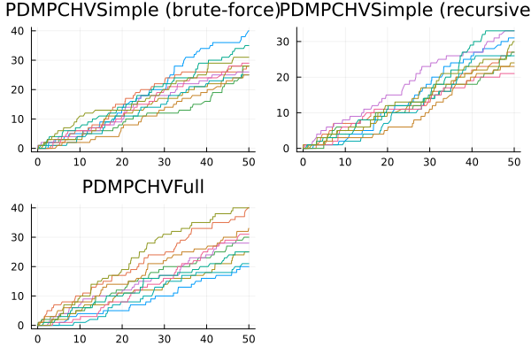
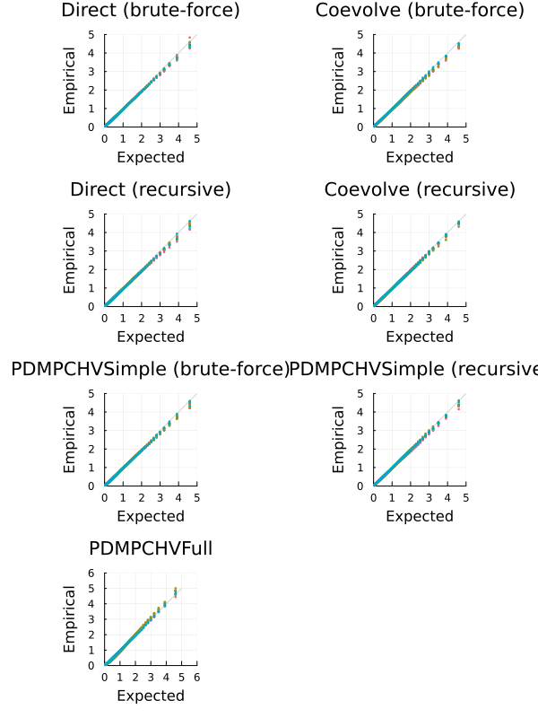
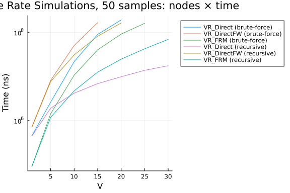

Multivariate Hawkes Model
using JumpProcesses, Graphs, Statistics, BenchmarkTools, Plots
using OrdinaryDiffEq: Tsit5
fmt = :png
width_px, height_px = default(:size);Model and example solutions
Let a graph with $V$ nodes, then the multivariate Hawkes process is characterized by $V$ point processes such that the conditional intensity rate of node $i$ connected to a set of nodes $E_i$ in the graph is given by:
\[ \lambda_i^\ast (t) = \lambda + \sum_{j \in E_i} \sum_{t_{n_j} < t} \alpha \exp \left[-\beta (t - t_{n_j}) \right]\]
This process is known as self-exciting, because the occurrence of an event $j$ at $t_{n_j}$ will increase the conditional intensity of all the processes connected to it by $\alpha$. The excited intensity then decreases at a rate proportional to $\beta$.
The conditional intensity of this process has a recursive formulation which can significantly speed the simulation. The recursive formulation for the univariate case is derived in Laub et al. [2]. We derive the compound case here. Let $t_{N_i} = \max \{ t_{n_j} < t \mid j \in E_i \}$ and
\[\begin{split} \phi_i^\ast (t) &= \sum_{j \in E_i} \sum_{t_{n_j} < t} \alpha \exp \left[-\beta (t - t_{N_i} + t_{N_i} - t_{n_j}) \right] \\ &= \exp \left[ -\beta (t - t_{N_i}) \right] \sum_{j \in E_i} \sum_{t_{n_j} \leq t_{N_i}} \alpha \exp \left[-\beta (t_{N_i} - t_{n_j}) \right] \\ &= \exp \left[ -\beta (t - t_{N_i}) \right] \left( \alpha + \phi^\ast (t_{N_i}) \right) \end{split}\]
Then the conditional intensity can be re-written in terms of $\phi_i^\ast (t_{N_i})$
\[ \lambda_i^\ast (t) = \lambda + \phi_i^\ast (t) = \lambda + \exp \left[ -\beta (t - t_{N_i}) \right] \left( \alpha + \phi_i^\ast (t_{N_i}) \right)\]
In Julia, we define a factory for the conditional intensity $\lambda_i$ which returns the brute-force or recursive versions of the intensity given node $i$ and network $g$.
function hawkes_rate(i::Int, g; use_recursion = false)
@inline @inbounds function rate_recursion(u, p, t)
λ, α, β, h, urate, ϕ = p
urate[i] = λ + exp(-β*(t - h[i]))*ϕ[i]
return urate[i]
end
@inline @inbounds function rate_brute(u, p, t)
λ, α, β, h, urate = p
x = zero(typeof(t))
for j in g[i]
for _t in reverse(h[j])
ϕij = α * exp(-β * (t - _t))
if ϕij ≈ 0
break
end
x += ϕij
end
end
urate[i] = λ + x
return urate[i]
end
if use_recursion
return rate_recursion
else
return rate_brute
end
endhawkes_rate (generic function with 1 method)Given the rate factory, we can create a jump factory which will create all the jumps in our model.
function hawkes_jump(i::Int, g; use_recursion = false)
rate = hawkes_rate(i, g; use_recursion)
urate = rate
@inbounds rateinterval(u, p, t) = p[5][i] == p[1] ? typemax(t) : 2 / p[5][i]
@inbounds lrate(u, p, t) = p[1]
@inbounds function affect_recursion!(integrator)
λ, α, β, h, _, ϕ = integrator.p
for j in g[i]
ϕ[j] *= exp(-β*(integrator.t - h[j]))
ϕ[j] += α
h[j] = integrator.t
end
integrator.u[i] += 1
end
@inbounds function affect_brute!(integrator)
push!(integrator.p[4][i], integrator.t)
integrator.u[i] += 1
end
return VariableRateJump(
rate,
use_recursion ? affect_recursion! : affect_brute!;
lrate,
urate,
rateinterval
)
end
function hawkes_jump(u, g; use_recursion = false)
return [hawkes_jump(i, g; use_recursion) for i in 1:length(u)]
endhawkes_jump (generic function with 2 methods)We can then create a factory for Multivariate Hawkes JumpProblems. We can define two types of JumpProblems depending on the aggregator. The Direct() aggregator expects an ODEProblem since it cannot handle the SSAStepper with VariableRateJumps.
function f!(du, u, p, t)
du .= 0
nothing
end
function hawkes_problem(
p,
agg;
vr_agg = VR_FRM(),
u = [0.0],
tspan = (0.0, 50.0),
save_positions = (false, true),
g = [[1]],
use_recursion = false,
)
oprob = ODEProblem(f!, u, tspan, p)
jumps = hawkes_jump(u, g; use_recursion)
jprob = JumpProblem(oprob, agg, jumps...; vr_aggregator = vr_agg, save_positions = save_positions)
return jprob
endhawkes_problem (generic function with 1 method)The Coevolve() aggregator knows how to handle the SSAStepper, so it accepts a DiscreteProblem.
function hawkes_problem(
p,
agg::Coevolve;
u = [0.0],
tspan = (0.0, 50.0),
save_positions = (false, true),
g = [[1]],
use_recursion = false
)
dprob = DiscreteProblem(u, tspan, p)
jumps = hawkes_jump(u, g; use_recursion)
jprob = JumpProblem(
dprob, agg, jumps...; dep_graph = g, save_positions = save_positions)
return jprob
endhawkes_problem (generic function with 2 methods)Lets solve the problems defined so far. We sample a random graph sampled from the Erdős-Rényi model. This model assumes that the probability of an edge between two nodes is independent of other edges, which we fix at $0.2$. For illustration purposes, we fix $V = 10$.
V = 10
G = erdos_renyi(V, 0.2, seed = 9103)
g = [neighbors(G, i) for i in 1:nv(G)]10-element Vector{Vector{Int64}}:
[4, 7]
[8, 9]
[4, 5]
[1, 3]
[3]
[]
[1, 8, 9]
[2, 7]
[2, 7, 10]
[9]We fix the Hawkes parameters at $\lambda = 0.5 , \alpha = 0.1 , \beta = 2.0$ which ensures the process does not explode.
tspan = (0.0, 50.0)
u = [0.0 for i in 1:nv(G)]
p = (0.5, 0.1, 2.0)(0.5, 0.1, 2.0)Now, we instantiate the problems, find their solutions and plot the results.
algorithms = Tuple{Any, Any, Bool, String}[
(
Direct(), Tsit5(), false, "Direct (brute-force)"),
(
Coevolve(), SSAStepper(), false, "Coevolve (brute-force)"),
(
Direct(), Tsit5(), true, "Direct (recursive)"),
(
Coevolve(), SSAStepper(), true, "Coevolve (recursive)")
]
let fig = []
for (i, (algo, stepper, use_recursion, label)) in enumerate(algorithms)
@info label
if use_recursion
h = zeros(eltype(tspan), nv(G))
urate = zeros(eltype(tspan), nv(G))
ϕ = zeros(eltype(tspan), nv(G))
_p = (p[1], p[2], p[3], h, ϕ, urate)
else
h = [eltype(tspan)[] for _ in 1:nv(G)]
urate = zeros(eltype(tspan), nv(G))
_p = (p[1], p[2], p[3], h, urate)
end
jump_prob = hawkes_problem(_p, algo; u, tspan, g, use_recursion)
sol = solve(jump_prob, stepper)
push!(fig, plot(sol.t, sol[1:V, :]', title = label, legend = false, format = fmt))
end
fig = plot(fig..., layout = (2, 2), format = fmt, size = (width_px, 2*height_px/2))
endAlternative libraries
We benchmark JumpProcesses.jl against PiecewiseDeterministicMarkovProcesses.jl and Python Tick library.
In order to compare with the PiecewiseDeterministicMarkovProcesses.jl, we need to reformulate our jump problem as a Piecewise Deterministic Markov Process (PDMP). In this setting, we have two options.
The simple version only requires the conditional intensity. Like above, we define a brute-force and recursive approach. Following the library's specification we define the following functions.
function hawkes_rate_simple_recursion(rate, xc, xd, p, t, issum::Bool)
λ, _, β, h, ϕ, g = p
for i in 1:length(g)
rate[i] = λ + exp(-β * (t - h[i])) * ϕ[i]
end
if issum
return sum(rate)
end
return 0.0
end
function hawkes_rate_simple_brute(rate, xc, xd, p, t, issum::Bool)
λ, α, β, h, g = p
for i in 1:length(g)
x = zero(typeof(t))
for j in g[i]
for _t in reverse(h[j])
ϕij = α * exp(-β * (t - _t))
if ϕij ≈ 0
break
end
x += ϕij
end
end
rate[i] = λ + x
end
if issum
return sum(rate)
end
return 0.0
end
function hawkes_affect_simple_recursion!(xc, xd, p, t, i::Int64)
_, α, β, h, ϕ, g = p
for j in g[i]
ϕ[j] *= exp(-β * (t - h[j]))
ϕ[j] += α
h[j] = t
end
end
function hawkes_affect_simple_brute!(xc, xd, p, t, i::Int64)
push!(p[4][i], t)
endhawkes_affect_simple_brute! (generic function with 1 method)Since this is a library for PDMP, we also need to define the ODE problem. In the simple version, we simply set it to zero.
function hawkes_drate_simple(dxc, xc, xd, p, t)
dxc .= 0
endhawkes_drate_simple (generic function with 1 method)Next, we create a factory for the Multivariate Hawkes PDMPCHVSimple problem.
import LinearAlgebra: I
using PiecewiseDeterministicMarkovProcesses
const PDMP = PiecewiseDeterministicMarkovProcesses
struct PDMPCHVSimple end
function hawkes_problem(p,
agg::PDMPCHVSimple;
u = [0.0],
tspan = (0.0, 50.0),
save_positions = (false, true),
g = [[1]],
use_recursion = true)
xd0 = Array{Int}(u)
xc0 = copy(u)
nu = one(eltype(xd0)) * I(length(xd0))
if use_recursion
jprob = PDMPProblem(hawkes_drate_simple, hawkes_rate_simple_recursion,
hawkes_affect_simple_recursion!, nu, xc0, xd0, p, tspan)
else
jprob = PDMPProblem(hawkes_drate_simple, hawkes_rate_simple_brute,
hawkes_affect_simple_brute!, nu, xc0, xd0, p, tspan)
end
return jprob
end
push!(algorithms, (PDMPCHVSimple(), CHV(Tsit5()), false, "PDMPCHVSimple (brute-force)"));
push!(algorithms, (PDMPCHVSimple(), CHV(Tsit5()), true, "PDMPCHVSimple (recursive)"));The full version requires that we describe how the conditional intensity changes with time which we derive below:
\[\begin{split} \frac{d \lambda_i^\ast (t)}{d t} &= -\beta \sum_{j \in E_i} \sum_{t_{n_j} < t} \alpha \exp \left[-\beta (t - t_{n_j}) \right] \\ &= -\beta \left( \lambda_i^\ast (t) - \lambda \right) \end{split}\]
function hawkes_drate_full(dxc, xc, xd, p, t)
λ, α, β, _, _, g = p
for i in 1:length(g)
dxc[i] = -β * (xc[i] - λ)
end
endhawkes_drate_full (generic function with 1 method)Next, we need to define the intensity rate and the jumps according to library's specification.
function hawkes_rate_full(rate, xc, xd, p, t, issum::Bool)
λ, α, β, _, _, g = p
if issum
return sum(@view(xc[1:length(g)]))
end
rate[1:length(g)] .= @view xc[1:length(g)]
return 0.0
end
function hawkes_affect_full!(xc, xd, p, t, i::Int64)
λ, α, β, _, _, g = p
for j in g[i]
xc[i] += α
end
endhawkes_affect_full! (generic function with 1 method)Finally, we create a factory for the Multivariate Hawkes PDMPCHVFull problem.
struct PDMPCHVFull end
function hawkes_problem(
p,
agg::PDMPCHVFull;
u = [0.0],
tspan = (0.0, 50.0),
save_positions = (false, true),
g = [[1]],
use_recursion = true
)
xd0 = Array{Int}(u)
xc0 = [p[1] for i in 1:length(u)]
nu = one(eltype(xd0)) * I(length(xd0))
jprob = PDMPProblem(
hawkes_drate_full, hawkes_rate_full, hawkes_affect_full!, nu, xc0, xd0, p, tspan)
return jprob
end
push!(algorithms, (PDMPCHVFull(), CHV(Tsit5()), true, "PDMPCHVFull"));The Python Tick library can be accessed with the PyCall.jl. We install the required Python dependencies with Conda.jl and define a factory for the Multivariate Hawkes PyTick problem.
const BENCHMARK_PYTHON::Bool = tryparse(Bool, get(ENV, "SCIMLBENCHMARK_PYTHON", "true"))
const REBUILD_PYCALL::Bool = tryparse(Bool, get(ENV, "SCIMLBENCHMARK_REBUILD_PYCALL", "true"))
struct PyTick end
if BENCHMARK_PYTHON
if REBUILD_PYCALL
using Pkg, Conda
# PyCall only works with Conda.ROOTENV
# tick requires python=3.8
Conda.add("python=3.8", Conda.ROOTENV)
Conda.add("numpy", Conda.ROOTENV)
Conda.pip_interop(true, Conda.ROOTENV)
Conda.pip("install", "tick", Conda.ROOTENV)
# rebuild PyCall to ensure it links to the python provided by Conda.jl
ENV["PYTHON"] = ""
Pkg.build("PyCall")
end
ENV["PYTHON"] = ""
using PyCall
@info "PyCall" PyCall.libpython PyCall.pyversion PyCall.conda
function hawkes_problem(
p,
agg::PyTick;
u = [0.0],
tspan = (0.0, 50.0),
save_positions = (false, true),
g = [[1]],
use_recursion = true
)
λ, α, β = p
SimuHawkesSumExpKernels = pyimport("tick.hawkes")[:SimuHawkesSumExpKernels]
jprob = SimuHawkesSumExpKernels(
baseline = fill(λ, length(u)),
adjacency = [i in j ? α / β : 0.0 for j in g, i in 1:length(u), u in 1:1],
decays = [β],
end_time = tspan[2],
verbose = false,
force_simulation = true
)
return jprob
end
push!(algorithms, (PyTick(), nothing, true, "PyTick"));
endError: ArgumentError: Package Conda not found in current path.
- Run `import Pkg; Pkg.add("Conda")` to install the Conda package.Now, we instantiate the problems, find their solutions and plot the results.
let fig = []
for (i, (algo, stepper, use_recursion, label)) in enumerate(algorithms[5:end])
@info label
if algo isa PyTick
_p = (p[1], p[2], p[3])
jump_prob = hawkes_problem(_p, algo; u, tspan, g, use_recursion)
jump_prob.reset()
jump_prob.simulate()
t = tspan[1]:0.1:tspan[2]
N = [[sum(jumps .< _t) for _t in t] for jumps in jump_prob.timestamps]
push!(fig, plot(t, N, title = label, legend = false, format = fmt))
elseif algo isa PDMPCHVSimple
if use_recursion
h = zeros(eltype(tspan), nv(G))
ϕ = zeros(eltype(tspan), nv(G))
_p = (p[1], p[2], p[3], h, ϕ, g)
else
h = [eltype(tspan)[] for _ in 1:nv(G)]
_p = (p[1], p[2], p[3], h, g)
end
jump_prob = hawkes_problem(_p, algo; u, tspan, g, use_recursion)
sol = solve(jump_prob, stepper)
push!(fig, plot(
sol.time, sol.xd[1:V, :]', title = label, legend = false, format = fmt))
elseif algo isa PDMPCHVFull
_p = (p[1], p[2], p[3], nothing, nothing, g)
jump_prob = hawkes_problem(_p, algo; u, tspan, g, use_recursion)
sol = solve(jump_prob, stepper)
push!(fig, plot(
sol.time, sol.xd[1:V, :]', title = label, legend = false, format = fmt))
end
end
fig = plot(fig..., layout = (2, 2), format = fmt, size = (width_px, 2*height_px/2))
end
Correctness: QQ-Plots
We check that the algorithms produce correct simulation by inspecting their QQ-plots. Point process theory says that transforming the simulated points using the compensator should produce points whose inter-arrival duration is distributed according to the exponential distribution (see Section 7.4 [1]).
The compensator of any point process is the integral of the conditional intensity $\Lambda_i^\ast(t) = \int_0^t \lambda_i^\ast(u) du$. The compensator for the Multivariate Hawkes process is defined below.
\[ \Lambda_i^\ast(t) = \lambda t + \frac{\alpha}{\beta} \sum_{j \in E_i} \sum_{t_{n_j} < t} ( 1 - \exp \left[-\beta (t - t_{n_j}) \right])\]
function hawkes_Λ(i::Int, g, p)
@inline @inbounds function Λ(t, h)
λ, α, β = p
x = λ * t
for j in g[i]
for _t in h[j]
if _t >= t
break
end
x += (α / β) * (1 - exp(-β * (t - _t)))
end
end
return x
end
return Λ
end
function hawkes_Λ(g, p)
return [hawkes_Λ(i, g, p) for i in 1:length(g)]
end
Λ = hawkes_Λ(g, p)10-element Vector{Main.var"##WeaveSandBox#225".var"#Λ#33"{Int64, Vector{Vec
tor{Int64}}, Tuple{Float64, Float64, Float64}}}:
(::Main.var"##WeaveSandBox#225".var"#Λ#33"{Int64, Vector{Vector{Int64}}, T
uple{Float64, Float64, Float64}}) (generic function with 1 method)
(::Main.var"##WeaveSandBox#225".var"#Λ#33"{Int64, Vector{Vector{Int64}}, T
uple{Float64, Float64, Float64}}) (generic function with 1 method)
(::Main.var"##WeaveSandBox#225".var"#Λ#33"{Int64, Vector{Vector{Int64}}, T
uple{Float64, Float64, Float64}}) (generic function with 1 method)
(::Main.var"##WeaveSandBox#225".var"#Λ#33"{Int64, Vector{Vector{Int64}}, T
uple{Float64, Float64, Float64}}) (generic function with 1 method)
(::Main.var"##WeaveSandBox#225".var"#Λ#33"{Int64, Vector{Vector{Int64}}, T
uple{Float64, Float64, Float64}}) (generic function with 1 method)
(::Main.var"##WeaveSandBox#225".var"#Λ#33"{Int64, Vector{Vector{Int64}}, T
uple{Float64, Float64, Float64}}) (generic function with 1 method)
(::Main.var"##WeaveSandBox#225".var"#Λ#33"{Int64, Vector{Vector{Int64}}, T
uple{Float64, Float64, Float64}}) (generic function with 1 method)
(::Main.var"##WeaveSandBox#225".var"#Λ#33"{Int64, Vector{Vector{Int64}}, T
uple{Float64, Float64, Float64}}) (generic function with 1 method)
(::Main.var"##WeaveSandBox#225".var"#Λ#33"{Int64, Vector{Vector{Int64}}, T
uple{Float64, Float64, Float64}}) (generic function with 1 method)
(::Main.var"##WeaveSandBox#225".var"#Λ#33"{Int64, Vector{Vector{Int64}}, T
uple{Float64, Float64, Float64}}) (generic function with 1 method)We need a method for extracting the history from a simulation run. Below, we define such functions for each type of algorithm.
"""
Given an ODE solution `sol`, recover the timestamp in which events occurred. It
returns a vector with the history of each process in `sol`.
It assumes that `JumpProblem` was initialized with `save_positions` equal to
`(true, false)`, `(false, true)` or `(true, true)` such the system's state is
saved before and/or after the jump occurs; and, that `sol.u` is a
non-decreasing series that counts the total number of events observed as a
function of time.
"""
function histories(u, t)
_u = permutedims(reduce(hcat, u))
k = size(_u)[2]
# computes a mask that show when total counts change
mask = cat(fill(0.0, 1, k), _u[2:end, :] .- _u[1:(end - 1), :], dims = 1) .≈ 1
h = Vector{typeof(t)}(undef, k)
@inbounds for i in 1:k
h[i] = t[mask[:, i]]
end
return h
end
function histories(sol::S) where {S <: ODESolution}
# get u and permute the dimensions to get a matrix n x k with n obsevations and k processes.
if sol.u[1] isa ExtendedJumpArray
u = map((u) -> u.u, sol.u)
else
u = sol.u
end
return histories(u, sol.t)
end
function histories(sol::S) where {S <: PDMP.PDMPResult}
return histories(sol.xd.u, sol.time)
end
function histories(sols)
map(histories, sols)
endhistories (generic function with 4 methods)We also need to compute the quantiles of the empirical distribution given a history of events hs, the compensator Λ and the target quantiles quant.
import Distributions: Exponential
"""
Computes the empirical and expected quantiles given a history of events `hs`,
the compensator `Λ` and the target quantiles `quant`.
The history `hs` is a vector with the history of each process. Alternatively,
the function also takes a vector of histories containing the histories from
multiple runs.
The compensator `Λ` can either be an homogeneous compensator function that
equally applies to all the processes in `hs`. Alternatively, it accepts a
vector of compensator that applies to each process.
"""
function qq(hs, Λ, quant = 0.01:0.01:0.99)
_hs = apply_Λ(hs, Λ)
T = typeof(hs[1][1][1])
Δs = Vector{Vector{T}}(undef, length(hs[1]))
for k in 1:length(Δs)
_Δs = Vector{Vector{T}}(undef, length(hs))
for i in 1:length(_Δs)
_Δs[i] = _hs[i][k][2:end] .- _hs[i][k][1:(end - 1)]
end
Δs[k] = reduce(vcat, _Δs)
end
empirical_quant = map((_Δs) -> quantile(_Δs, quant), Δs)
expected_quant = quantile(Exponential(1.0), quant)
return empirical_quant, expected_quant
end
"""
Compute the compensator `Λ` value for each timestamp recorded in history `hs`.
The history `hs` is a vector with the history of each process. Alternatively,
the function also takes a vector of histories containing the histories from
multiple runs.
The compensator `Λ` can either be an homogeneous compensator function that
equally applies to all the processes in `hs`. Alternatively, it accepts a
vector of compensator that applies to each process.
"""
function apply_Λ(hs::V, Λ) where {V <: Vector{<:Number}}
_hs = similar(hs)
@inbounds for n in 1:length(hs)
_hs[n] = Λ(hs[n], hs)
end
return _hs
end
function apply_Λ(k::Int, hs::V, Λ::A) where {V <: Vector{<:Vector{<:Number}}, A <: Array}
@inbounds hsk = hs[k]
@inbounds Λk = Λ[k]
_hs = similar(hsk)
@inbounds for n in 1:length(hsk)
_hs[n] = Λk(hsk[n], hs)
end
return _hs
end
function apply_Λ(hs::V, Λ) where {V <: Vector{<:Vector{<:Number}}}
_hs = similar(hs)
@inbounds for k in 1:length(_hs)
_hs[k] = apply_Λ(hs[k], Λ)
end
return _hs
end
function apply_Λ(hs::V, Λ::A) where {V <: Vector{<:Vector{<:Number}}, A <: Array}
_hs = similar(hs)
@inbounds for k in 1:length(_hs)
_hs[k] = apply_Λ(k, hs, Λ)
end
return _hs
end
function apply_Λ(hs::V, Λ) where {V <: Vector{<:Vector{<:Vector{<:Number}}}}
return map((_hs) -> apply_Λ(_hs, Λ), hs)
endapply_Λ (generic function with 5 methods)We can construct QQ-plots with a Plot recipe as following.
@userplot QQPlot
@recipe function f(x::QQPlot)
empirical_quant, expected_quant = x.args
max_empirical_quant = maximum(maximum, empirical_quant)
max_expected_quant = maximum(expected_quant)
upperlim = ceil(maximum([max_empirical_quant, max_expected_quant]))
@series begin
seriestype := :line
linecolor := :lightgray
label --> ""
(x) -> x
end
@series begin
seriestype := :scatter
aspect_ratio := :equal
xlims := (0.0, upperlim)
ylims := (0.0, upperlim)
xaxis --> "Expected"
yaxis --> "Empirical"
markerstrokewidth --> 0
markerstrokealpha --> 0
markersize --> 1.5
size --> (400, 500)
label --> permutedims(["quantiles $i" for i in 1:length(empirical_quant)])
expected_quant, empirical_quant
end
endNow, we simulate all of the algorithms we defined in the previous Section $250$ times to produce their QQ-plots.
let fig = []
for (i, (algo, stepper, use_recursion, label)) in enumerate(algorithms)
@info label
if algo isa PyTick
_p = (p[1], p[2], p[3])
elseif algo isa PDMPCHVSimple
if use_recursion
h = zeros(eltype(tspan), nv(G))
ϕ = zeros(eltype(tspan), nv(G))
_p = (p[1], p[2], p[3], h, ϕ, g)
else
h = [eltype(tspan)[] for _ in 1:nv(G)]
_p = (p[1], p[2], p[3], h, g)
end
elseif algo isa PDMPCHVFull
_p = (p[1], p[2], p[3], nothing, nothing, g)
else
if use_recursion
h = zeros(eltype(tspan), nv(G))
ϕ = zeros(eltype(tspan), nv(G))
urate = zeros(eltype(tspan), nv(G))
_p = (p[1], p[2], p[3], h, urate, ϕ)
else
h = [eltype(tspan)[] for _ in 1:nv(G)]
urate = zeros(eltype(tspan), nv(G))
_p = (p[1], p[2], p[3], h, urate)
end
end
jump_prob = hawkes_problem(_p, algo; u, tspan, g, use_recursion)
runs = Vector{Vector{Vector{Number}}}(undef, 250)
for n in 1:length(runs)
if algo isa PyTick
jump_prob.reset()
jump_prob.simulate()
runs[n] = jump_prob.timestamps
else
if ~(algo isa PDMPCHVFull)
if use_recursion
h .= 0
ϕ .= 0
else
for _h in h
empty!(_h)
end
end
if ~(algo isa PDMPCHVSimple)
urate .= 0
end
end
runs[n] = histories(solve(jump_prob, stepper))
end
end
qqs = qq(runs, Λ)
push!(fig, qqplot(
qqs..., legend = false, aspect_ratio = :equal, title = label, fmt = fmt))
end
fig = plot(fig..., layout = (4, 2), fmt = fmt, size = (width_px, 4*height_px/2))
end
Benchmarking performance
In this Section we benchmark all the algorithms introduced in the first Section.
We generate networks in the range from $1$ to $95$ nodes and simulate the Multivariate Hawkes process $25$ units of time.
and simulate models in the range from $1$ to $95$ nodes for $25$ units of time. We fix the Hawkes parameters at $\lambda = 0.5 , \alpha = 0.1 , \beta = 5.0$ which ensures the process does not explode. We simulate $50$ trajectories with a limit of ten seconds to complete execution for each configuration.
tspan = (0.0, 25.0)
p = (0.5, 0.1, 5.0)
Vs = append!([1], 5:5:95)
Gs = [erdos_renyi(V, 0.2, seed = 6221) for V in Vs]
bs = Vector{Vector{BenchmarkTools.Trial}}()
for (algo, stepper, use_recursion, label) in algorithms
@info label
global _stepper = stepper
push!(bs, Vector{BenchmarkTools.Trial}())
_bs = bs[end]
for (i, G) in enumerate(Gs)
local g = [neighbors(G, i) for i in 1:nv(G)]
local u = [0.0 for i in 1:nv(G)]
if algo isa PyTick
_p = (p[1], p[2], p[3])
elseif algo isa PDMPCHVSimple
if use_recursion
global h = zeros(eltype(tspan), nv(G))
global ϕ = zeros(eltype(tspan), nv(G))
_p = (p[1], p[2], p[3], h, ϕ, g)
else
global h = [eltype(tspan)[] for _ in 1:nv(G)]
_p = (p[1], p[2], p[3], h, g)
end
elseif algo isa PDMPCHVFull
_p = (p[1], p[2], p[3], nothing, nothing, g)
else
if use_recursion
global h = zeros(eltype(tspan), nv(G))
global urate = zeros(eltype(tspan), nv(G))
global ϕ = zeros(eltype(tspan), nv(G))
_p = (p[1], p[2], p[3], h, urate, ϕ)
else
global h = [eltype(tspan)[] for _ in 1:nv(G)]
global urate = zeros(eltype(tspan), nv(G))
_p = (p[1], p[2], p[3], h, urate)
end
end
global jump_prob = hawkes_problem(_p, algo; u, tspan, g, use_recursion)
trial = try
if algo isa PyTick
@benchmark(jump_prob.simulate(),
setup=(jump_prob.reset()),
samples=50,
evals=1,
seconds=10,)
else
if algo isa PDMPCHVFull
@benchmark(solve(jump_prob, _stepper),
setup=(),
samples=50,
evals=1,
seconds=10,)
elseif algo isa PDMPCHVSimple
if use_recursion
@benchmark(solve(jump_prob, _stepper),
setup=(h .= 0; ϕ .= 0),
samples=50,
evals=1,
seconds=10,)
else
@benchmark(solve(jump_prob, _stepper),
setup=([empty!(_h) for _h in h]),
samples=50,
evals=1,
seconds=10,)
end
else
if use_recursion
@benchmark(solve(jump_prob, _stepper),
setup=(h .= 0; urate .= 0; ϕ .= 0),
samples=50,
evals=1,
seconds=10,)
else
@benchmark(solve(jump_prob, _stepper),
setup=([empty!(_h) for _h in h]; urate .= 0),
samples=50,
evals=1,
seconds=10,)
end
end
end
catch e
BenchmarkTools.Trial(
BenchmarkTools.Parameters(samples = 50, evals = 1, seconds = 10),
)
end
push!(_bs, trial)
if (nv(G) == 1 || nv(G) % 10 == 0)
median_time = length(trial) > 0 ?
"$(BenchmarkTools.prettytime(median(trial.times)))" :
"nan"
println("algo=$(label), V = $(nv(G)), length = $(length(trial.times)), median time = $median_time")
end
end
endalgo=Direct (brute-force), V = 1, length = 50, median time = 94.424 μs
algo=Direct (brute-force), V = 10, length = 50, median time = 10.867 ms
algo=Direct (brute-force), V = 20, length = 50, median time = 88.938 ms
algo=Direct (brute-force), V = 30, length = 37, median time = 269.886 ms
algo=Direct (brute-force), V = 40, length = 7, median time = 1.639 s
algo=Direct (brute-force), V = 50, length = 4, median time = 2.960 s
algo=Direct (brute-force), V = 60, length = 2, median time = 5.393 s
algo=Direct (brute-force), V = 70, length = 2, median time = 8.176 s
algo=Direct (brute-force), V = 80, length = 1, median time = 13.647 s
algo=Direct (brute-force), V = 90, length = 1, median time = 21.228 s
algo=Coevolve (brute-force), V = 1, length = 50, median time = 3.665 μs
algo=Coevolve (brute-force), V = 10, length = 50, median time = 207.569 μs
algo=Coevolve (brute-force), V = 20, length = 50, median time = 1.364 ms
algo=Coevolve (brute-force), V = 30, length = 50, median time = 3.308 ms
algo=Coevolve (brute-force), V = 40, length = 50, median time = 8.066 ms
algo=Coevolve (brute-force), V = 50, length = 50, median time = 16.693 ms
algo=Coevolve (brute-force), V = 60, length = 50, median time = 29.836 ms
algo=Coevolve (brute-force), V = 70, length = 50, median time = 51.041 ms
algo=Coevolve (brute-force), V = 80, length = 50, median time = 75.882 ms
algo=Coevolve (brute-force), V = 90, length = 50, median time = 123.100 ms
algo=Direct (recursive), V = 1, length = 50, median time = 84.284 μs
algo=Direct (recursive), V = 10, length = 50, median time = 4.771 ms
algo=Direct (recursive), V = 20, length = 50, median time = 24.122 ms
algo=Direct (recursive), V = 30, length = 50, median time = 67.159 ms
algo=Direct (recursive), V = 40, length = 11, median time = 978.714 ms
algo=Direct (recursive), V = 50, length = 6, median time = 1.834 s
algo=Direct (recursive), V = 60, length = 4, median time = 3.132 s
algo=Direct (recursive), V = 70, length = 2, median time = 5.075 s
algo=Direct (recursive), V = 80, length = 2, median time = 7.879 s
algo=Direct (recursive), V = 90, length = 1, median time = 12.161 s
algo=Coevolve (recursive), V = 1, length = 50, median time = 3.840 μs
algo=Coevolve (recursive), V = 10, length = 50, median time = 72.399 μs
algo=Coevolve (recursive), V = 20, length = 50, median time = 258.553 μs
algo=Coevolve (recursive), V = 30, length = 50, median time = 481.132 μs
algo=Coevolve (recursive), V = 40, length = 50, median time = 897.533 μs
algo=Coevolve (recursive), V = 50, length = 50, median time = 1.483 ms
algo=Coevolve (recursive), V = 60, length = 50, median time = 2.161 ms
algo=Coevolve (recursive), V = 70, length = 50, median time = 3.101 ms
algo=Coevolve (recursive), V = 80, length = 50, median time = 4.031 ms
algo=Coevolve (recursive), V = 90, length = 50, median time = 5.424 ms
algo=PDMPCHVSimple (brute-force), V = 1, length = 50, median time = 71.764
μs
algo=PDMPCHVSimple (brute-force), V = 10, length = 50, median time = 4.740
ms
algo=PDMPCHVSimple (brute-force), V = 20, length = 50, median time = 40.425
ms
algo=PDMPCHVSimple (brute-force), V = 30, length = 50, median time = 112.87
1 ms
algo=PDMPCHVSimple (brute-force), V = 40, length = 35, median time = 286.67
5 ms
algo=PDMPCHVSimple (brute-force), V = 50, length = 18, median time = 583.59
4 ms
algo=PDMPCHVSimple (brute-force), V = 60, length = 10, median time = 1.061
s
algo=PDMPCHVSimple (brute-force), V = 70, length = 6, median time = 1.911 s
algo=PDMPCHVSimple (brute-force), V = 80, length = 4, median time = 2.903 s
algo=PDMPCHVSimple (brute-force), V = 90, length = 3, median time = 5.018 s
algo=PDMPCHVSimple (recursive), V = 1, length = 50, median time = 73.075 μs
algo=PDMPCHVSimple (recursive), V = 10, length = 50, median time = 338.957
μs
algo=PDMPCHVSimple (recursive), V = 20, length = 50, median time = 805.093
μs
algo=PDMPCHVSimple (recursive), V = 30, length = 50, median time = 1.531 ms
algo=PDMPCHVSimple (recursive), V = 40, length = 50, median time = 2.509 ms
algo=PDMPCHVSimple (recursive), V = 50, length = 50, median time = 3.647 ms
algo=PDMPCHVSimple (recursive), V = 60, length = 50, median time = 5.191 ms
algo=PDMPCHVSimple (recursive), V = 70, length = 50, median time = 7.178 ms
algo=PDMPCHVSimple (recursive), V = 80, length = 50, median time = 9.484 ms
algo=PDMPCHVSimple (recursive), V = 90, length = 50, median time = 12.234 m
s
algo=PDMPCHVFull, V = 1, length = 50, median time = 71.589 μs
algo=PDMPCHVFull, V = 10, length = 50, median time = 490.986 μs
algo=PDMPCHVFull, V = 20, length = 50, median time = 749.969 μs
algo=PDMPCHVFull, V = 30, length = 50, median time = 1.219 ms
algo=PDMPCHVFull, V = 40, length = 50, median time = 1.534 ms
algo=PDMPCHVFull, V = 50, length = 50, median time = 1.902 ms
algo=PDMPCHVFull, V = 60, length = 50, median time = 2.516 ms
algo=PDMPCHVFull, V = 70, length = 50, median time = 3.055 ms
algo=PDMPCHVFull, V = 80, length = 50, median time = 3.673 ms
algo=PDMPCHVFull, V = 90, length = 50, median time = 4.356 mslet fig = plot(
yscale = :log10,
xlabel = "V",
ylabel = "Time (ns)",
legend_position = :outertopright
)
for (i, (algo, stepper, use_recursion, label)) in enumerate(algorithms)
_bs, _Vs = [], []
for (j, b) in enumerate(bs[i])
if length(b) == 50
push!(_bs, median(b.times))
push!(_Vs, Vs[j])
end
end
plot!(_Vs, _bs, label = label)
end
title!("Simulations, 50 samples: nodes × time")
endBenchmarking Variable Rate Aggregators
We benchmark the variable rate aggregators (VR_Direct, VR_DirectFW, VR_FRM) for the Multivariate Hawkes process, using the same setup as above: networks from 1 to 50 nodes, tspan=(0.0, 25.0), \lambda=0.5, \alpha=0.1, \beta=5.0, and 50 trajectories with a 10-second limit per configuration. We test both recursive and brute-force formulations.
vr_aggs = [
(VR_Direct(), Tsit5(), false, "VR_Direct (brute-force)"),
(VR_DirectFW(), Tsit5(), false, "VR_DirectFW (brute-force)"),
(VR_FRM(), Tsit5(), false, "VR_FRM (brute-force)"),
(VR_Direct(), Tsit5(), true, "VR_Direct (recursive)"),
(VR_DirectFW(), Tsit5(), true, "VR_DirectFW (recursive)"),
(VR_FRM(), Tsit5(), true, "VR_FRM (recursive)"),
]
tspan = (0.0, 25.0)
p = (0.5, 0.1, 5.0)
Vs = append!([1], 5:5:95)
Gs = [erdos_renyi(V, 0.2, seed = 6221) for V in Vs]
vr_bs = Vector{Vector{BenchmarkTools.Trial}}()
for (vr_agg, stepper, use_recursion, label) in vr_aggs
@info label
global _stepper = stepper
push!(vr_bs, Vector{BenchmarkTools.Trial}())
_vr_bs = vr_bs[end]
for (i, G) in enumerate(Gs)
local g = [neighbors(G, i) for i in 1:nv(G)]
local u = [0.0 for i in 1:nv(G)]
if use_recursion
global h = zeros(eltype(tspan), nv(G))
global urate = zeros(eltype(u), nv(G))
global ϕ = zeros(eltype(tspan), nv(G))
_p = (p[1], p[2], p[3], h, urate, ϕ)
else
global h = [eltype(tspan)[] for _ in 1:nv(G)]
global urate = zeros(eltype(u), nv(G))
_p = (p[1], p[2], p[3], h, urate)
end
global jump_prob = hawkes_problem(_p, Direct(); vr_agg, u, tspan, g, use_recursion)
trial = try
if use_recursion
@benchmark(
solve(jump_prob, _stepper),
setup = (h .= 0; urate .= 0; ϕ .= 0),
samples = 50,
evals = 1,
seconds = 10,
)
else
@benchmark(
solve(jump_prob, _stepper),
setup = ([empty!(_h) for _h in h]; urate .= 0),
samples = 50,
evals = 1,
seconds = 10,
)
end
catch e
BenchmarkTools.Trial(
BenchmarkTools.Parameters(samples=50, evals=1, seconds=10),
)
end
push!(_vr_bs, trial)
if (nv(G) == 1 || nv(G) % 10 == 0)
median_time =
length(trial) > 0 ? "$(BenchmarkTools.prettytime(median(trial.times)))" : "nan"
println("algo=$label, V=$(nv(G)), length=$(length(trial.times)), median time=$median_time")
end
end
endalgo=VR_Direct (brute-force), V=1, length=50, median time=449.841 μs
algo=VR_Direct (brute-force), V=10, length=50, median time=21.695 ms
algo=VR_Direct (brute-force), V=20, length=50, median time=191.295 ms
algo=VR_Direct (brute-force), V=30, length=16, median time=632.394 ms
algo=VR_Direct (brute-force), V=40, length=2, median time=5.376 s
algo=VR_Direct (brute-force), V=50, length=1, median time=10.608 s
algo=VR_Direct (brute-force), V=60, length=1, median time=17.122 s
algo=VR_Direct (brute-force), V=70, length=1, median time=28.665 s
algo=VR_Direct (brute-force), V=80, length=1, median time=46.071 s
algo=VR_Direct (brute-force), V=90, length=1, median time=65.666 s
algo=VR_DirectFW (brute-force), V=1, length=50, median time=721.864 μs
algo=VR_DirectFW (brute-force), V=10, length=50, median time=50.393 ms
algo=VR_DirectFW (brute-force), V=20, length=28, median time=364.858 ms
algo=VR_DirectFW (brute-force), V=30, length=10, median time=1.115 s
algo=VR_DirectFW (brute-force), V=40, length=4, median time=2.619 s
algo=VR_DirectFW (brute-force), V=50, length=2, median time=5.234 s
algo=VR_DirectFW (brute-force), V=60, length=2, median time=8.774 s
algo=VR_DirectFW (brute-force), V=70, length=1, median time=17.229 s
algo=VR_DirectFW (brute-force), V=80, length=1, median time=24.781 s
algo=VR_DirectFW (brute-force), V=90, length=1, median time=41.577 s
algo=VR_FRM (brute-force), V=1, length=50, median time=90.730 μs
algo=VR_FRM (brute-force), V=10, length=50, median time=10.672 ms
algo=VR_FRM (brute-force), V=20, length=50, median time=91.432 ms
algo=VR_FRM (brute-force), V=30, length=37, median time=277.224 ms
algo=VR_FRM (brute-force), V=40, length=7, median time=1.553 s
algo=VR_FRM (brute-force), V=50, length=4, median time=3.091 s
algo=VR_FRM (brute-force), V=60, length=2, median time=5.529 s
algo=VR_FRM (brute-force), V=70, length=2, median time=9.129 s
algo=VR_FRM (brute-force), V=80, length=1, median time=13.720 s
algo=VR_FRM (brute-force), V=90, length=1, median time=21.684 s
algo=VR_Direct (recursive), V=1, length=50, median time=442.066 μs
algo=VR_Direct (recursive), V=10, length=50, median time=4.171 ms
algo=VR_Direct (recursive), V=20, length=50, median time=9.837 ms
algo=VR_Direct (recursive), V=30, length=50, median time=17.478 ms
algo=VR_Direct (recursive), V=40, length=4, median time=3.306 s
algo=VR_Direct (recursive), V=50, length=2, median time=6.133 s
algo=VR_Direct (recursive), V=60, length=1, median time=10.602 s
algo=VR_Direct (recursive), V=70, length=1, median time=17.601 s
algo=VR_Direct (recursive), V=80, length=1, median time=28.534 s
algo=VR_Direct (recursive), V=90, length=1, median time=39.955 s
algo=VR_DirectFW (recursive), V=1, length=50, median time=697.695 μs
algo=VR_DirectFW (recursive), V=10, length=50, median time=30.726 ms
algo=VR_DirectFW (recursive), V=20, length=50, median time=163.387 ms
algo=VR_DirectFW (recursive), V=30, length=22, median time=454.891 ms
algo=VR_DirectFW (recursive), V=40, length=10, median time=1.017 s
algo=VR_DirectFW (recursive), V=50, length=6, median time=1.855 s
algo=VR_DirectFW (recursive), V=60, length=4, median time=3.263 s
algo=VR_DirectFW (recursive), V=70, length=2, median time=5.126 s
algo=VR_DirectFW (recursive), V=80, length=2, median time=7.834 s
algo=VR_DirectFW (recursive), V=90, length=1, median time=11.180 s
algo=VR_FRM (recursive), V=1, length=50, median time=90.644 μs
algo=VR_FRM (recursive), V=10, length=50, median time=4.706 ms
algo=VR_FRM (recursive), V=20, length=50, median time=24.648 ms
algo=VR_FRM (recursive), V=30, length=50, median time=69.202 ms
algo=VR_FRM (recursive), V=40, length=10, median time=1.037 s
algo=VR_FRM (recursive), V=50, length=6, median time=1.890 s
algo=VR_FRM (recursive), V=60, length=3, median time=3.467 s
algo=VR_FRM (recursive), V=70, length=2, median time=5.471 s
algo=VR_FRM (recursive), V=80, length=2, median time=8.095 s
algo=VR_FRM (recursive), V=90, length=1, median time=12.071 slet fig = plot(
yscale = :log10,
xlabel = "V",
ylabel = "Time (ns)",
legend_position = :outertopright,
)
for (i, (vr_agg, _, use_recursion, label)) in enumerate(vr_aggs)
_bs, _Vs = [], []
for (j, b) in enumerate(vr_bs[i])
if length(b) == 50
push!(_bs, median(b.times))
push!(_Vs, Vs[j])
end
end
plot!(_Vs, _bs, label=label)
end
title!("Variable Rate Simulations, 50 samples: nodes × time")
end
References
[1] D. J. Daley and D. Vere-Jones. An Introduction to the Theory of Point Processes: Volume I: Elementary Theory and Methods. Probability and Its Applications, An Introduction to the Theory of Point Processes. Springer-Verlag, 2 edition. doi:10.1007/b97277.
[2] Patrick J. Laub, Young Lee, and Thomas Taimre. The Elements of Hawkes Processes. Springer International Publishing. doi:10.1007/978-3-030-84639-8.